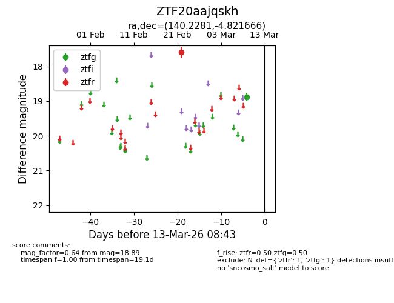
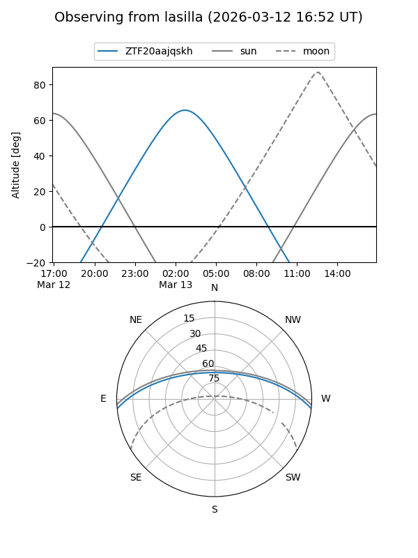
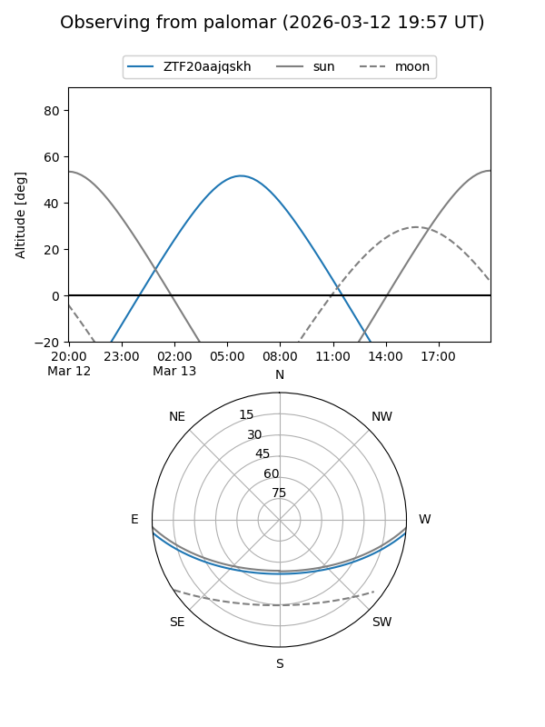

ZTF20aajqskh
Target ZTF20aajqskh at 2026-03-13 08:45
Aliases and brokers:
FINK: link
Lasair: link
ALeRCE: link
alt names
ZTF20aajqskh (ztf,fink_ztf)
Coordinates:
equatorial (ra, dec) = 140.2281,-4.82167
equatorial (HMS+DMS) = 09:20:54.75,-04:49:18.00
galactic (l, b) = (236.8105,+29.99544)
Flags:
Photometry:
last ztfg=18.89, ztfr=17.60
1 ztfg, 1 ztfr detections
Lightcurve

Visibility


Additional plots